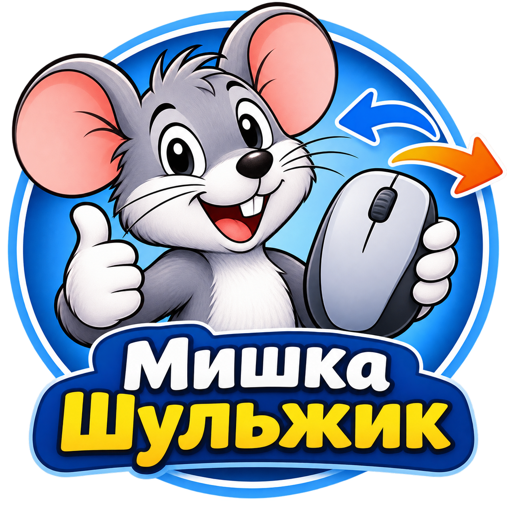

Мишка Шульжик
Невелика системна утиліта для Windows, яка дозволяє перемикати основну кнопку миші для правої або лівої руки запуском одного ярлика.
Windows · Безкоштовна утиліта
Що вміє Шульжик?
Для правої руки
Повертає стандартне розташування кнопок миші: основна кнопка — ліва.
Для лівої руки
Перемикає основну кнопку миші на праву, що зручно для лівші.
Простота використання
Два окремі ярлики дозволяють швидко змінити налаштування без пошуку потрібного пункту Windows.
Як користуватися?
- Завантажте та встановіть програму.
- Відкрийте меню «Пуск».
- Знайдіть папку «Мишка Шульжик».
- Оберіть потрібний ярлик: «Права рука» або «Ліва рука».
- Налаштування основної кнопки миші зміниться автоматично.
Щоб повернути стандартне керування,
оберіть «Права рука».